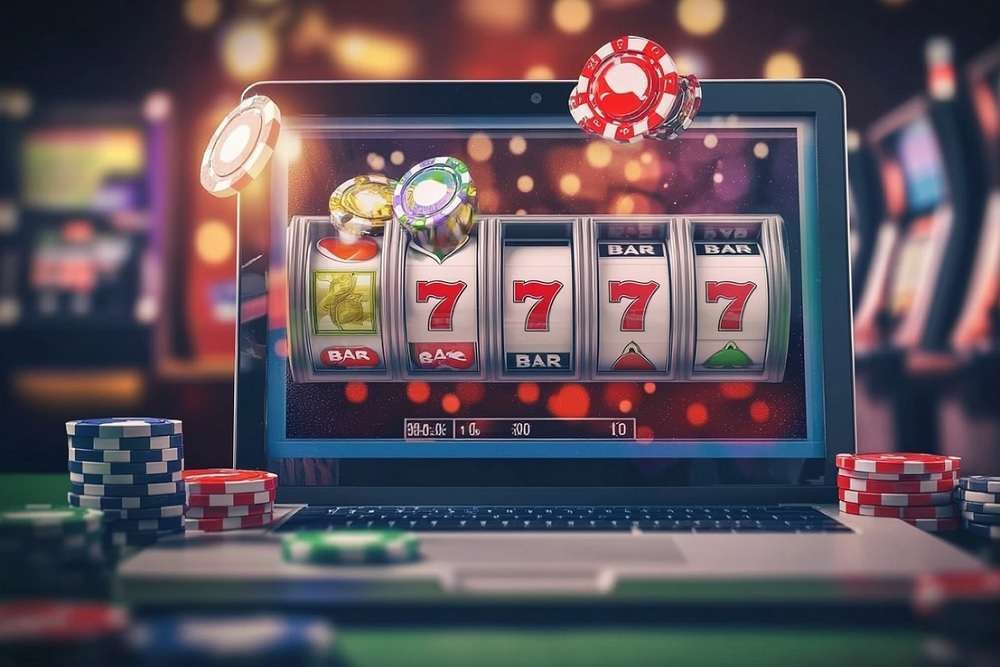

Wealth Wise
Edukasi Literasi Keuangan untuk Pelajar

Korban Judi Online di Indonesia
Judi online bukan sekadar permainan, tapi jebakan yang telah menghancurkan banyak kehidupan. Di Indonesia, banyak kasus mencuat ke publik — mulai dari pelajar yang nekat mencuri demi top-up, orang tua yang menjual rumah karena kalah judi, hingga pegawai negara yang korup karena kecanduan. Bahkan ada kasus tragis: seorang ayah di Jawa Tengah mengakhiri hidupnya karena kalah ratusan juta rupiah.
Siapa saja yang terdampak?
- Pelajar & mahasiswa — Terjebak lewat iklan "cuan instan", akhirnya kecanduan dan berutang.
- Ibu rumah tangga — Awalnya coba-coba main slot dari HP, akhirnya pinjam ke tetangga demi modal.
- Pekerja & ASN — Demi balikin kekalahan, mereka korupsi atau ambil uang kantor.
- Anak-anak — Tanpa sadar main game yang sisipkan unsur judi (spin, slot, gacha).
Sebagai pelajar, apa yang sebaiknya kita lakukan?
- Jangan coba-coba — Judi online dibuat agar bikin kecanduan. Sekali menang, kamu ingin main lagi. Sekali kalah, kamu kejar balik. Akhirnya… kamu rugi semua.
- Blokir akses — Laporkan situs/aplikasi ilegal ke aduankonten.id dan jangan sebarkan link ke temanmu.
- Edukasi teman-teman — Ajak diskusi kritis di sekolah soal bahaya judi online. Kamu bisa mulai dengan data korban dan cerita nyata di berita.
- Kembangkan skill keuangan positif — Fokus ke hal produktif: menabung, usaha kecil, atau belajar investasi legal.
Kesimpulan: Judi online bukan solusi, tapi racun digital. Jika kita ingin masa depan cerah, kita harus tegas menolaknya — bukan cuma buat diri sendiri, tapi juga teman-teman sekitar.